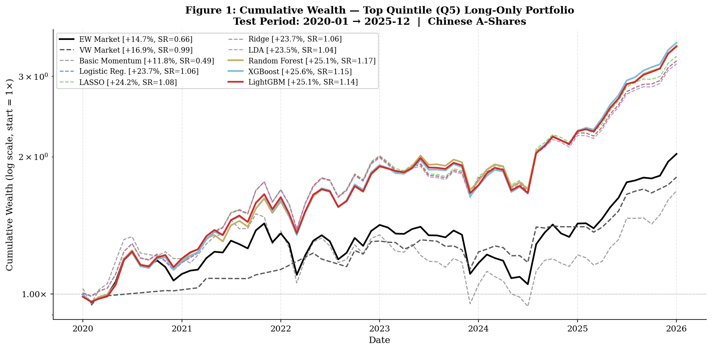
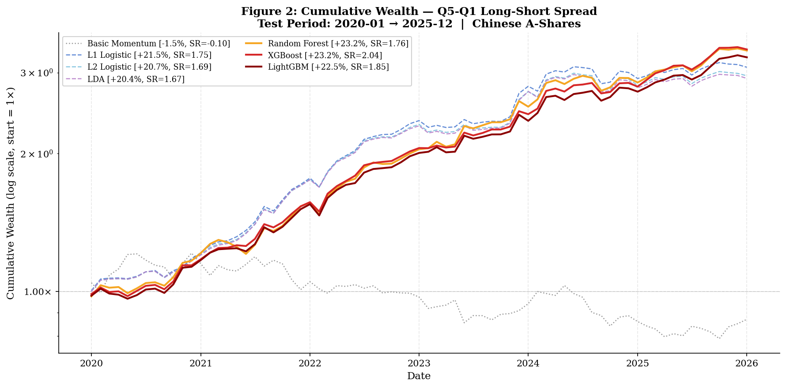
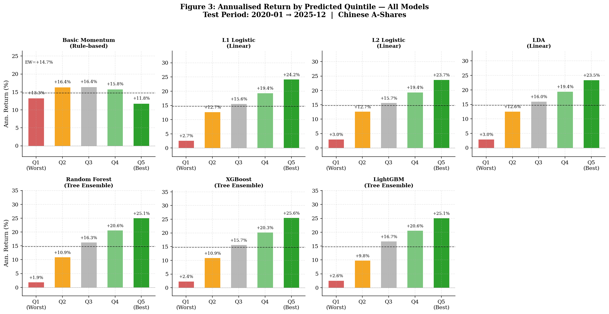
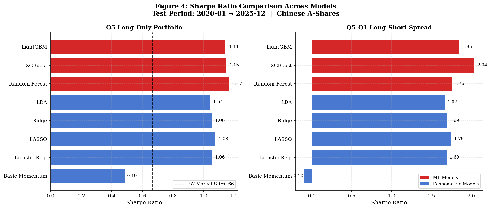
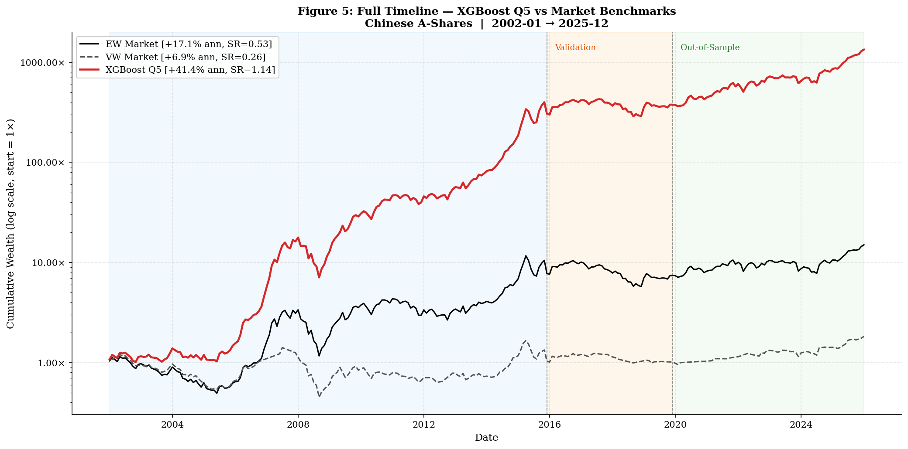
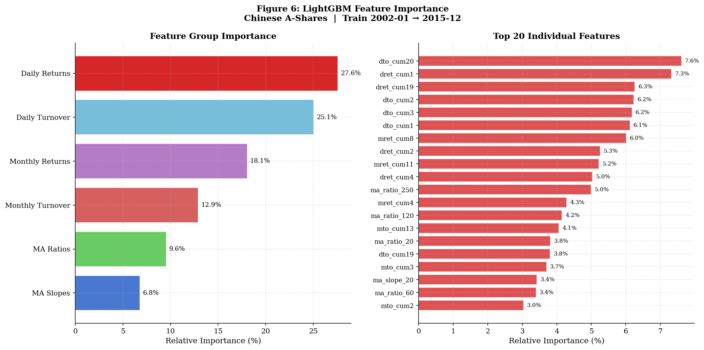

The classical 12-1 momentum strategy — buying past 12-month winners and shorting past losers — is one of the most robust return anomalies in U.S. equity markets. China's A-share market is structurally different: a predominantly retail investor base, frequent policy-driven reversals, daily price limits, and a documented absence of conventional momentum effects.
Inspired by Gu, Kelly & Xiu (2020), this project investigates momentum in Chinese A-shares, asking whether machine learning models can extract cross-sectional return predictability from a richer set of price and volume features — features that rule-based momentum strategies systematically ignore.
The prediction task is binary classification. Each month, models rank all eligible stocks by their predicted probability of beating the cross-sectional median return in the following month. Stocks are sorted into quintile portfolios Q1 (lowest signal) through Q5 (highest signal), held for one month. The Q5–Q1 long-short spread is evaluated out-of-sample over the 2020–2025 test period. Seven models are compared, from the naive 12-1 momentum rule to gradient-boosted trees.
📄 Gu, Kelly & Xiu (2020) (PDF)Data are sourced from the China Stock Market & Accounting Research (CSMAR) database, covering all Chinese A-shares from January 2001 to December 2025. The raw data comprise 16,748,839 daily stock observations, which are cleaned, filtered, and aggregated into monthly panel observations used for model training and evaluation. B-shares, BSE stocks, and SSE B-shares are excluded. A 180-day post-IPO filter is applied to avoid thin-trading bias.
Five CSMAR datasets are used: daily returns (Dretwd), adjusted closing prices (Adjprcwd), circulating market capitalisation (Dsmvosd), daily turnover (ToverOs), and monthly returns and turnover averages. The sample is split chronologically: Train: 2002–2015 (260,825 observations) · Validation: 2016–2019 (140,929 observations) · Out-of-sample test: 2020–2025 (326,243 observations).
74 cross-sectional features are constructed from price and volume data only — no accounting data, no analyst estimates. All features are computed from data available as of end of month t−1, cross-sectionally z-scored within each month, and winsorised at the 1st and 99th percentiles.
Although portfolios are rebalanced monthly, daily data are used to construct features. This is intentional: daily returns and turnover over the past 1–20 trading days capture intra-month price dynamics and trading activity that monthly aggregates obscure. Feature importance results confirm this — daily features alone account for over 52% of LightGBM gain, and the most informative individual features are daily-frequency variables. Monthly rebalancing keeps transaction costs manageable while daily features provide the informational edge.
| Feature Group | Features | Count | LGB Gain |
|---|---|---|---|
| Daily Returns | dret_cum1 … dret_cum20 | 20 | 27.6% |
| Daily Turnover | dto_cum1 … dto_cum20 | 20 | 25.1% |
| Monthly Returns | mret_cum2 … mret_cum13 | 12 | 18.1% |
| Monthly Turnover | mto_cum2 … mto_cum13 | 12 | 12.9% |
| MA Ratios | ma_ratio_5/20/60/120/250 | 5 | 9.6% |
| MA Slopes | ma_slope_5/20/60/120/250 | 5 | 6.8% |
| Total | 74 | 100% |
Seven models are compared, all trained on the same 74 features with identical data splits. The basic momentum model serves as the rule-based baseline — it requires no training, relying solely on the 12-month cumulative return signal. The remaining six span linear classifiers and tree ensemble models. All reported metrics are strictly out-of-sample (test period 2020–2025). Hyperparameters for all models are set to standard values and fixed a priori; tree-based models use early stopping on the validation set solely to determine the optimal number of boosting rounds.
All results are evaluated on the out-of-sample test period (2020–2025). Benchmarks are the equal-weighted and value-weighted market indices across all eligible A-shares.
| Model | Q1 | Q2 | Q3 | Q4 | Q5 | Q5−Q1 | L/S Sharpe |
|---|---|---|---|---|---|---|---|
| EW Market | +14.71% | — | — | — | — | — | 0.66 |
| VW Market | +16.90% | — | — | — | — | — | 0.99 |
| Basic Momentum | +13.25% | +16.36% | +16.44% | +15.80% | +11.76% | −1.49% | −0.10 |
| L1 Logistic | +2.67% | +12.74% | +15.62% | +19.39% | +24.19% | +21.52% | 1.75 |
| L2 Logistic | +3.04% | +12.67% | +15.70% | +19.38% | +23.75% | +20.71% | 1.69 |
| LDA | +3.01% | +12.59% | +16.04% | +19.44% | +23.45% | +20.44% | 1.67 |
| Random Forest | +1.89% | +10.93% | +16.31% | +20.64% | +25.08% | +23.19% | 1.76 |
| XGBoost | +2.38% | +10.92% | +15.70% | +20.26% | +25.56% | +23.18% | 2.04 |
| LightGBM | +2.61% | +9.81% | +16.71% | +20.59% | +25.11% | +22.50% | 1.85 |
| Model | Q5 Return | Q5 Sharpe | Q5 Max DD | L/S Return | L/S Sharpe | L/S Max DD |
|---|---|---|---|---|---|---|
| EW Market | +14.71% | 0.66 | −26.41% | — | — | — |
| VW Market | +16.90% | 0.99 | −13.63% | — | — | — |
| Basic Momentum | +11.76% | 0.49 | −37.32% | −1.49% | −0.10 | −34.87% |
| L1 Logistic | +24.19% | 1.08 | −21.40% | +21.52% | 1.75 | −8.15% |
| L2 Logistic | +23.75% | 1.06 | −21.28% | +20.71% | 1.69 | −8.17% |
| LDA | +23.45% | 1.04 | −21.43% | +20.44% | 1.67 | −8.29% |
| Random Forest | +25.08% | 1.17 | −16.62% | +23.19% | 1.76 | −7.22% |
| XGBoost | +25.56% | 1.15 | −18.50% | +23.18% | 2.04 | −5.10% |
| LightGBM | +25.11% | 1.14 | −17.90% | +22.50% | 1.85 | −5.48% |





